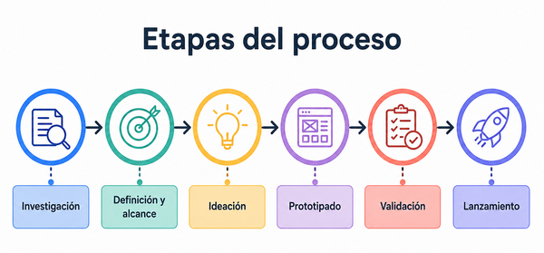

Cómo encaro cada proyecto
Mi forma de trabajo parte de una idea simple: cuanto mejor entendemos el problema, mejor puede ser la solución. Por eso, antes de diseñar o construir, busco reunir contexto, hacer preguntas y ordenar la información disponible.
Etapas del proceso
- Investigación: recolección de datos, referencias, necesidades y contexto del proyecto.
- Definición y alcance: alineación entre el problema, los objetivos y las expectativas del cliente.
- Ideación: exploración de posibles soluciones antes de tomar decisiones definitivas.
- Prototipado: construcción de una primera versión para visualizar y ajustar la propuesta.
- Validación: revisión del prototipo con el cliente y, cuando corresponde, con usuarios reales.
- Lanzamiento: publicación del producto una vez revisado, ajustado y validado.

El proceso puede variar según el tipo de proyecto. Los tiempos se acuerdan en conjunto y las iteraciones acompañan todo el recorrido para mejorar el resultado final.